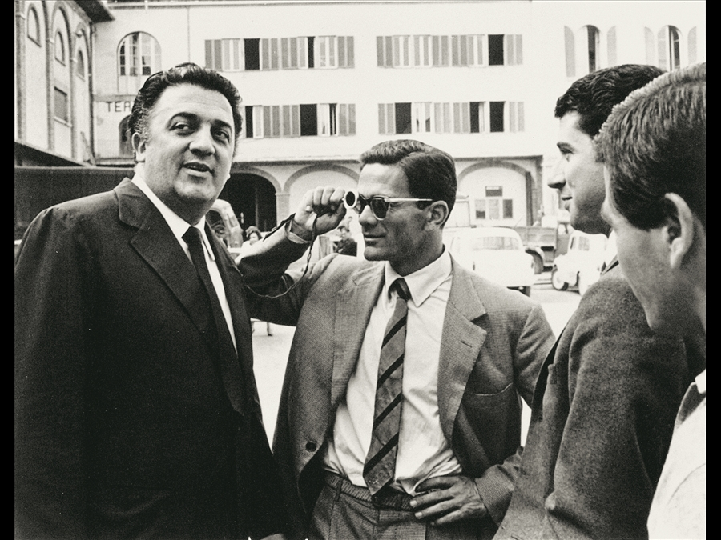

Discovering Bologna
A Journey Through History, Culture & Innovation
Pier Paolo Pasolini: Bologna’s most unconventional son
I believe not many artists have held the ability to inspire Madonna, David Bowie, Martin Scorsese and David Lachapelle at the same time.
Unluckily his vast product is still undiscovered and not particularly popular abroad, but many people have been aware of the geniality and evocative power of Pierpaolo Pasolini, one of the most influential and enigmatic figures in the modern literature.
Openly gay, very supportive of Anarchy and completely against any rigidly defining rule of the then italian society, Pasolini was an explosion of creativity and exuberance, bringing the italian writing and filming scene to new heights.
In his works he anticipated the sense of emptiness, decline and sadness which later on would have manifested itself so clearly in the modern society where the quest to own is the reason of everything.
Pasolini was very openly against the way italian politics were operating at that time, with a growing force of right-wing extremists colliding with a left party more and more corrupted and distant from the needs of the lower class.
Pasolini is an intriguing mix of search, aesthetics and anthropology, his movies pioneered decades earlier the sense of discovery and drama which today is so widely used and overflowing.
Drama, pathos, pain and restless self-investigation, Pasolini is the soul of Bologna, he embodies its undisputed human qualities and its sense of humanity and humility; Bologna is
pictured under a very touching light, a tribute that Pasolini never missed to offer to his city.
Pasolini’s house in Bologna
Let yourself into the allure of this genius and let’s get through some of the most iconic places that so
much have contributed to the role of Pasolini in the global literature.
From Portico dei Servi to Via Borgonuovo, every year an ever-growing number of tourists fall in love with this almost mythological and eclectic artist most fields own something to.

Street art representing Pasolini
The power of being yourself at any given cost, the quest for a more profound and fair reality and the idea of art as a tool to contribute to society: all concepts that are nowadays staple for GEN Z, digital coaches and last-minute artists but which were so unthinkable and forbidden over 40 years ago.
A damn genius, another reason to visit Bologna and let his light bright your life.
Source: Tours And The City
Do you like what you see?
Our user-friendly interface allows you to seamlessly navigate between articles and visualize their locations on an interactive map, while our commitment to editorial excellence ensures that every piece is engaging, informative, and accurate. The Discovering Bologna team has meticulously crafted every typographic detail, from font families and sizes to colors, margins, aspect ratios, and captivating images with captivating captions, to truly reflect the graphic theme and ambiance of this captivating city.
Join us on this digital adventure and explore the wonders of Bologna like never before, all from the comfort of your own home. Discovering Bologna: Unraveling the secrets of the city, one story at a time.